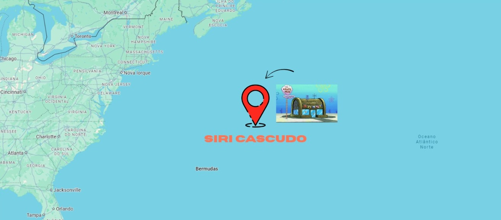

VENHA NOS VISITAR

📍 Av. Concha do Mar, nº 42 – Fundo do Oceano, Fenda do Biquíni
Ao lado da âncora do Sr. Sirigueijo, Fenda do Biquíni :)
📍 Av. Concha do Mar, nº 42 – Fundo do Oceano, Fenda do Biquíni
Ao lado da âncora do Sr. Sirigueijo, Fenda do Biquíni :)